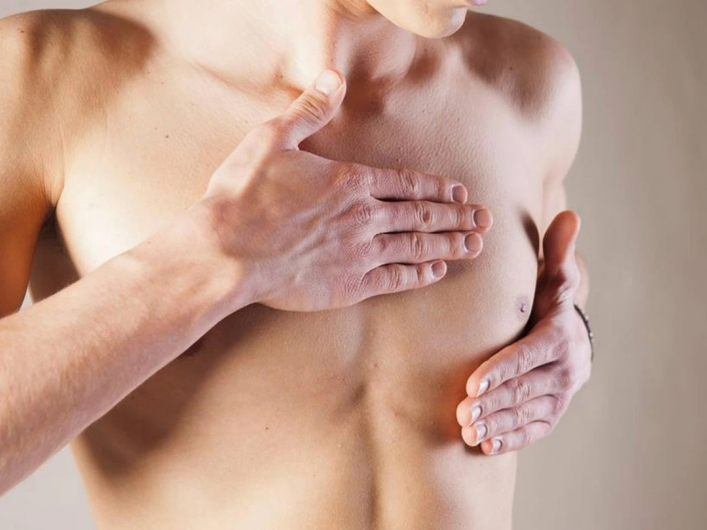

How did the Pink October start?
The Pink October began in the United States at the end of the 20th century, when many states came together to raise citizens' awareness of the disease and with the approval of the U.S. Congress, it became known as the month of breast cancer prevention and awareness. This movement bears as a symbol a pink bow, which was used by the participants of the Healing Race that took place in New York in the 1990s. In this race, participants from all over the country, that was in treatment or had already been in cancer treatment. Soon, hospitals began distributing the bonds as a means of dissemination and fundraising for cancer research.

In Brazil
In our country, the Pink October began to be marked in 2002, when the Obelisk of Ibirapuera (Mausoleum of the Constitutionalist Soldier) in São Paulo, was all illuminated in pink and soon the idea spread to more sights.
Referências:
https://fundacaolacorosa.com/conheca-a-historia-do-cancer-de-mama/https://www.youtube.com/watch?v=lqzyJAYPdz4
Statistics
The National Cancer Institute (INCA) estimates that for each year of the triennium 2020/2022, 66,280 new cases of breast cancer are diagnosed in Brazil, with an estimated risk of 61.61 cases per 100,000 women.
Which age group has the highest incidence of breast cancer in women?
Breast cancer has higher incidence after 60 years, but disease behavior is more aggressive in young women. If diagnosed at first, chances of cure are above 90%.
What percentage of women have breast cancer?
Breast cancer is the most common in women in the world, with approximately 2.3 million new cases estimated in 2020, representing 24.5% of new cases of cancer in women.
Does have breast cancer in men?
Men are diagnosed on average at age 72. Family history. The risk of breast cancer increases if close relatives of the family have had breast cancer. About 20% of men with breast cancer have a close relative (male or female) with the disease.

What is the percentage of breast cancer in men?
Breast cancer affects 1% of the male population and is more prevalent in obese and etilist men. Men should be alerted and informed about breast cancer as well. Compared to women, breast cancer is rarer, with an incidence of approximately 1% in the male population in general.
More than 17,500 women and almost 200 men die of breast cancer in Brazil each year. At least 48 people die daily from this tumor.